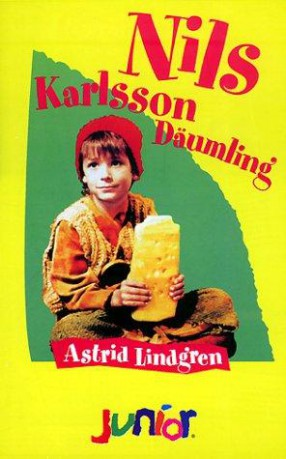

#9638 Nils Karlsson Däumling
 
 IMDB-Wertung: 5.6 / 10
IMDB-Wertung: 5.6 / 10  Metascore: 0
Metascore: 0 
7-year-old Bertil's parents are at work and Bertil are home alone and bored. He is the only child in the family since his sister Martha died of an illness. But everything changes when he meets little Nils Karlsson Pyssling and they become friends. Nisse who lives in the basement in a room he rents from the rat Tjofsan,wich is cruel.
Jahr: 1990
Dauer: 75 Minuten
FSK: 0
Land: Schweden Studio: SFTonspuren:
Untertitel:
Auflösung: 720p (1196x720) Größe: 1710 MB
Genre: Fantasy, Familie
Regisseur: Staffan Götestam
Drehbuch: Staffan Götestam, Astrid Lindgren
Soundtrack: Anders Berglund
Darsteller:
- Ulla Sallert als Hulda
- Jonatan Lindoff als Nils Karlsson Pyssling
- Oskar Löfkvist als Bertil
- Britta Pettersson als Mamma
- Charlie Elvegård als Pappa
- Sotis als Tusse
- Bubblan als Tjoffsan
Datei: X:\Kinder Collections\Astrid Lindgren\Nils Karlsson Däumling (1990, FSK0, 1196x720).mkv seit 25.09.2018
Festplatte: Kinder-Filme+Trick
 Es gibt insgesamt 26 Filme in der Gruppe 'Kinder Collections\Astrid Lindgren'
Es gibt insgesamt 26 Filme in der Gruppe 'Kinder Collections\Astrid Lindgren'